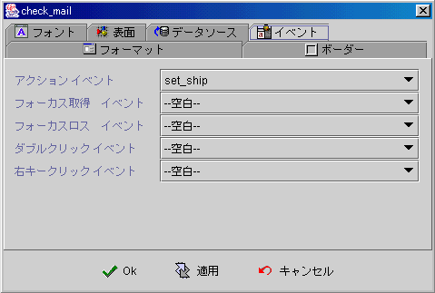

|

チェックボックスコンポーネント (Checkbox component)
共通プロパティ (common properties)
表面 (face)
データソース (data source)
イベント (event)
フォーミュラ
get/set プロパティ
(formula get/set properties)
表面 (face)
-
文字 (text)：表示する文字。
-
ホットキー
(mnemonic)：選択し，
"ALT"
キーを押したまま，指定のホットキーを押します。アプリ−を実行する時に，ユーザは
"ALT" キー+ホットキーを押すと，結果はマウス (clicked)
でコンポーネント(Checkbox)を選択したのと同じです 。
-
水平 (text horizontal position)：文字はチェックアイコン
(icon) の相対的な水平位置。
-
垂直 (text vertical position)：文字はチェックアイコン
(icon) との水平位置はセンター (center) の時に，
文字はチェックアイコン (icon) と相対的な垂直位置。
-
Paint オプション：以下のプロパティはコンポーネントプロパティが不透明
(opaque)の時にのみ，効果がある。
-
Focus (paint focus)：コンポーネントに
Focus (focus owner)がある時に，文字に Focus
の枠線が表示されます。
-
ペイント充填 (paint fill)：ユーザはマウスかキーを押した時に，コンポーネントはデフォルトカラーを背景カラーに，マウスリリース
(release) の時に，元の設定された背景カラーに戻ります。
-
ペイントボーダー (paint border)：チェックボックスの外枠が表示されます。
-
選択なしアイコン (unchecked icon)：チェックボックスは
(unchecked) の時，このマークが表示されます。
-
選択済アイコン (checked icon)：チェックボックスは
(checked) の時，このマークが表示されます。
-
マウスオーバー (roll over icon)：マウスオーバーの時に，チェックボックスは
(unchecked) の時，このマークが表示されます。
▲Top
データソース(data source)
-
データソース (data source)：データソース選択。
-
データフィールド (data field)：データソースからデータフィールドの選択。
-
コンディーション
(checked condition)：チェックボックス選択条件のフォーミュラー判断(formula)。
-
選択 (checked)：選択済チェックボックスは
(unchecked)の時，選択済フォーミュラ (formula)の結果がコンポーネント値になります。
-
選択なし(unchecked)：選択なしチェックボックスは
(unchecked)の時，選択なしフォーミュラ (formula)の結果がコンポーネント値になります。
▲Top
イベント (event)
-
アクションイベント
(action event)：使ユーザは選択チェック(check or uncheck)する時に，イベントを起動します (fire event)。
-
Gain
Focus 事件：Focus
をチェックボックスに移動するとイベントを起動します
。
-
Lost
Focus 事件：Focus
をチェックボックス外に移動するとイベントを起動します。
-
ダブルクリックイベント
(double clicked event)：マウス左キーをダブルクリックするとイベントを起動します。
-
右クリックイベント
(right clicked event)：マウス右クリックするとイベントを起動します。

▲Top
フォーミュラ
get/set プロパティ (formula get/set properties)
SetProp("コンポーネント名",
"プロパティ", 値) ：プロパティ設定。
SetProp("コンポーネント名",
"プロパティ", 値1,
値2)：プロパティ設定。
GetProp("コンポーネント名",
"プロパティ")：プロパティ読み取り。
| Set
Properties |
プロパティ
(Properties) |
値1
(Value 1) |
値2
(Value 2) |
説明
(Descriptions) |
| enabled |
1 有効，0 無効 |
|
有効か無効。 |
| setfocus |
1 Focusの設定 |
|
Focus設定。 |
| visible |
1 表示，0 隠し |
|
表示か隠し。 |
| repaint |
1 再描き，2 即時に再描き |
|
再度描き。 |
| revalidate |
1 フォーミュラで再度計算 |
|
フォーミュラで再度計算。 |
| text |
文字列 |
|
表示テキストの設定(
Label text)。 |
| selected |
1 チェック，0 ノンチェック |
|
(Checked) か (Unchecked)の状態設定。 |
| Get
Properties |
| プロパティ
(Properties) |
転送
(Return value) |
説明
(Descriptions) |
| isenabled |
1 有効，0 無効 |
有効か無効。 |
| isvisible |
1 表示，0 隠し |
表示か隠し。 |
| selected |
1 チェック，0 ノンチェック |
チェックかノンチェック。 |
| text |
文字列 |
表示するテキスト(
Label text)。 |
▲Top
Copyright © 2001~
2004 Probe Technology . All Rights Reserved.
Questions, comments,
and suggestions to Service@probe.com.tw
|